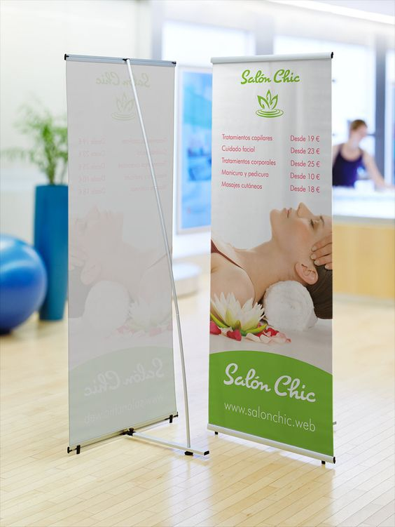
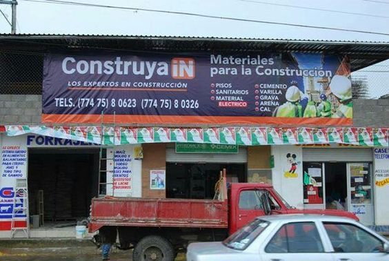
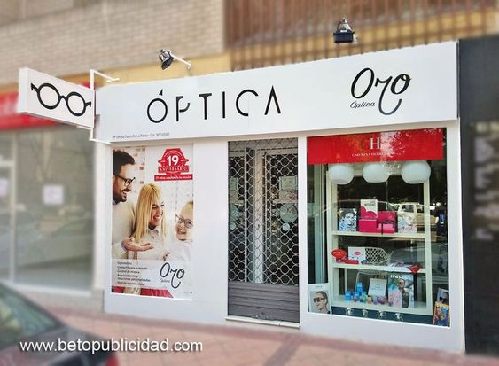
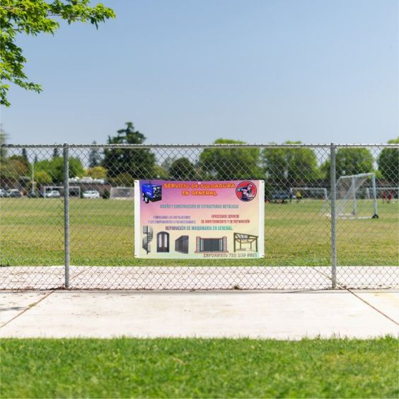
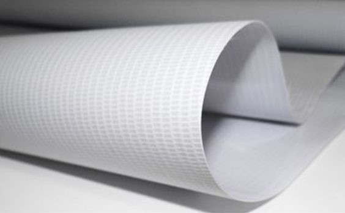
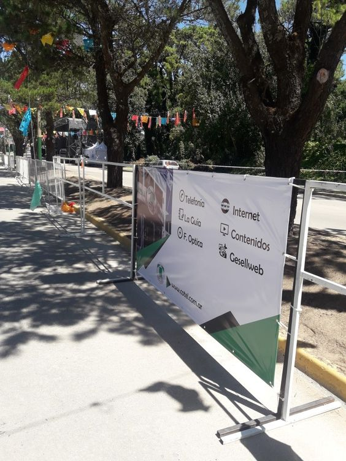

Una lona publicitaria es una herramienta visual poderosa que sirve para atraer la atención de los
clientes potenciales y comunicar de manera efectiva la identidad de tu negocio, promociones, o
servicios. Las lonas son versátiles y permiten a las empresas tener una presencia física destacada,
ya sea en exteriores o interiores. En un entorno comercial competitivo, contar con una lona bien
diseñada puede hacer la diferencia entre captar la atención de los transeúntes o pasar
desapercibido.
Las lonas también son una excelente manera de aumentar el reconocimiento de la marca, ya que
permiten que tu mensaje sea visible a gran escala, las 24 horas del día, los 7 días de la semana.
Además, son relativamente asequibles en comparación con otras formas de publicidad, como anuncios en
radio, televisión o internet, lo que las convierte en una solución rentable para todo tipo de
negocios.
Las lonas permiten que tu marca sea vista desde lejos, ya que pueden colocarse en áreas estratégicas como fachadas, calles concurridas o eventos. Una lona bien ubicada tiene el potencial de captar la atención de un gran número de personas a diario, lo que incrementa las probabilidades de atraer clientes a tu negocio.
El costo de producción de una lona es relativamente bajo en comparación con otros medios publicitarios, pero su impacto puede ser significativo. Es una inversión a largo plazo, ya que las lonas pueden durar mucho tiempo si se usan materiales de calidad, lo que te garantiza una presencia constante sin la necesidad de renovar frecuentemente tu anuncio.
Las lonas pueden ser completamente personalizadas para ajustarse a la identidad visual de tu negocio. Puedes incluir colores corporativos, logotipos, imágenes de productos, promociones especiales o cualquier mensaje que desees comunicar. Esta flexibilidad te permite adaptarlas fácilmente a campañas de temporada, promociones o eventos especiales.
Evita recargar tu lona con demasiada información. Un mensaje claro y directo es mucho más efectivo para captar la atención de los transeúntes. Utiliza colores llamativos, pero asegúrate de que los textos sean fáciles de leer. El equilibrio entre imágenes y texto es clave para que el mensaje se entienda de un vistazo.
Elige materiales resistentes al clima, especialmente si tu lona estará expuesta a condiciones exteriores. Las lonas de vinilo son una excelente opción, ya que soportan la lluvia, el sol y el viento sin degradarse fácilmente. Esto asegurará que tu inversión en publicidad sea duradera y mantenga su apariencia profesional por más tiempo.
El lugar donde coloques tu lona es tan importante como su diseño. Asegúrate de ubicarla en un área de alto tráfico, donde sea visible tanto para peatones como para conductores. Considera puntos estratégicos cercanos a tu negocio o en áreas comerciales concurridas para maximizar su impacto.
Antes de enviar tu lona a imprimir, asegúrate de revisar el diseño varias veces para evitar errores de ortografía, problemas de color o imágenes de baja calidad. Un error en la lona puede afectar negativamente la percepción de tu marca y será costoso corregirlo una vez impresa.
Dependiendo del lugar donde planees colocar la lona, elige un tamaño que sea visible desde la distancia adecuada. Si está en una fachada alta o en una carretera, necesitarás un tamaño más grande que permita ver los detalles desde lejos. Por el contrario, si estará en interiores, un tamaño más pequeño puede ser suficiente.
Para garantizar la mejor calidad de impresión, consulta con una empresa especializada que pueda asesorarte sobre los mejores materiales y acabados para tu lona. Ellos también pueden ofrecerte recomendaciones sobre colores y detalles técnicos que mejorarán la durabilidad y el impacto visual de tu anuncio.